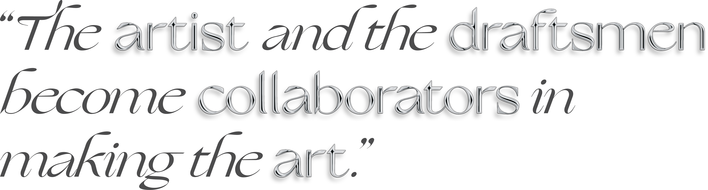
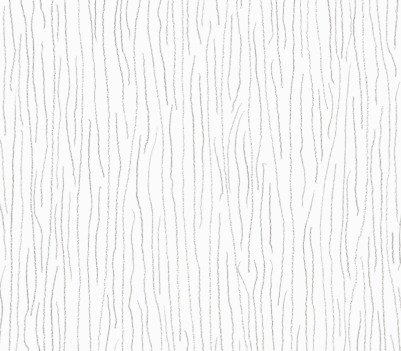

What is DailyDose?
Studies show that spending time on creative goals
daily makes people feel happier and more fulfilled,
but doing something every day is easier said than done.
DailyDose helps with that. We took artist Sol Lewitt’s Wall Drawings,
which facilitate the process of making, and turned them into a tool
for you to get in the habit of creativity! Come back daily, and we
will give you a new Wall Drawing to do. It will take you about as
long as answering an email or brushing your teeth, but we
promise it will be much more fun.


Solomon “Sol” LeWitt was an American artist considered to be a founder of
Conceptual Art and
Minimalism. Lewitt posits that,
“the idea becomes a machine that makes the art” and that ideas themselves can be art.
His series of
Wall Drawings, considered to be some of his most integral pieces, explore this question.
For each of his Wall Drawings, Lewitt writes out a set of instructions.
He then has draftsmen follow the instructions in order to create the final drawing.
Lewitt considers the final pieces to be a collaboration between himself and the draftsmen.
In
Doing Wall Drawings, Lewitt wrote the following about this series:
“The draftsman's contributions are unforeseen by the artist, even if he, the artist, is the draftsman.
Even if the same draftsman followed the same plan twice, there would be two different works of art.
No one can do the same thing twice.
The artist and the draftsman become collaborators in making the art.
Each person draws a line differently and each person understands words differently.”
In doing these drawings, you are collaborating with Lewitt to make a work of art.
It is the perfect way to do something creative—there is no need to stress about what to do or where to start,
since you have a world renowned artist as your guide.
Now, it is just up to you to execute it!